GH01 Pacientes e identidad
Identidad provisional, revisión de duplicados y conservación de referencias históricas. PACIENTE es el mismo objeto en todas las vistas.
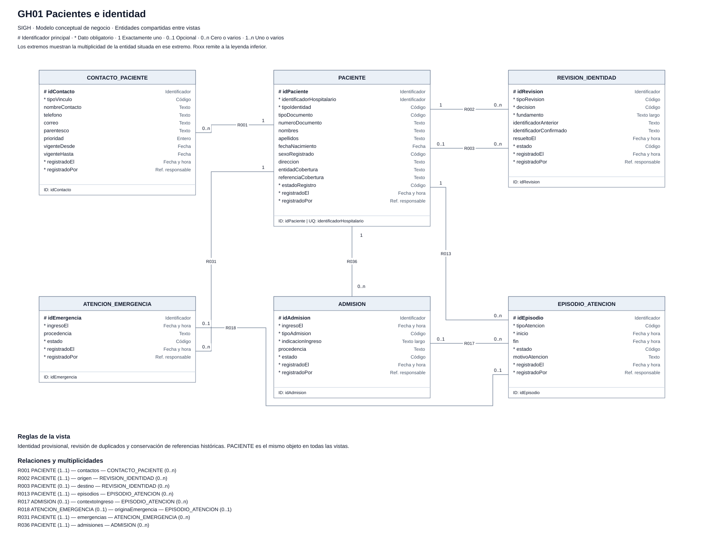
GH02 Profesionales, agendas y citas
La cita reserva un turno de una agenda. El control transaccional respeta la capacidad configurada; reprogramaciones y estados tienen historial.
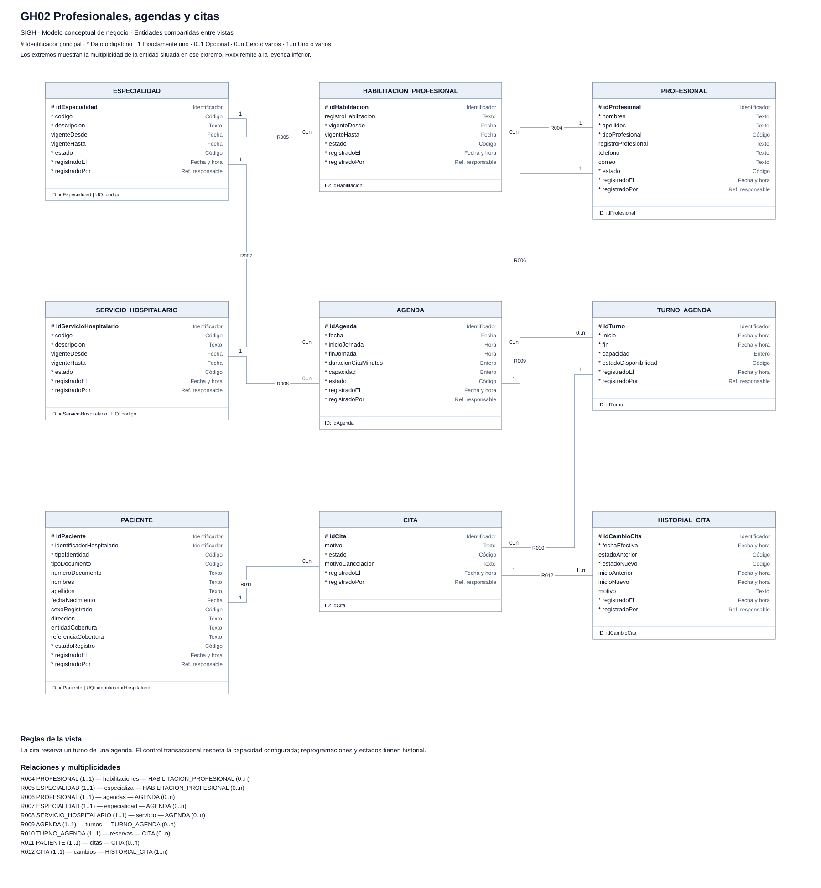
GH03 Historia clínica y enfermería
Autoría clínica explícita; notas y adendas conservadas, diagnósticos por episodio y mediciones con fecha y unidad.
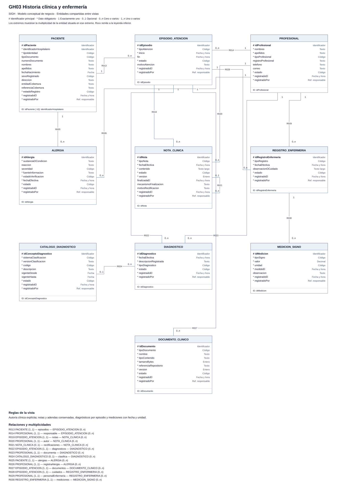
GH04 Emergencias y origen de atención
Los orígenes opcionales deben ser coherentes con el tipo de atención y el mismo paciente. La prioridad clínica la registra el profesional.
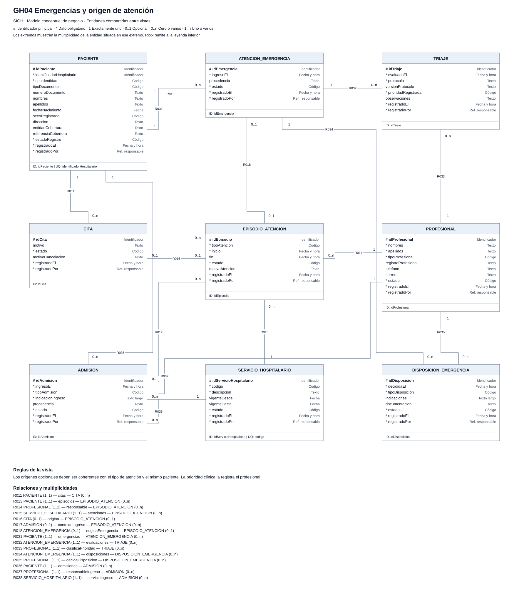
GH05 Solicitudes y resultados de laboratorio
Cabecera, exámenes y parámetros separados. Un resultado en borrador puede no tener validación; la liberación exige validación de su versión.
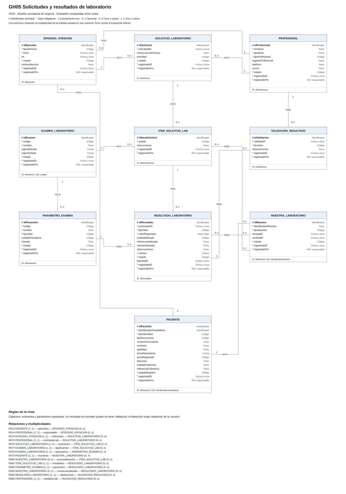
GH06 Imagenología y documentos
Informes versionados con autor y validador. Los documentos e imágenes se vinculan al estudio y al episodio; repositorio interno en el alcance base.
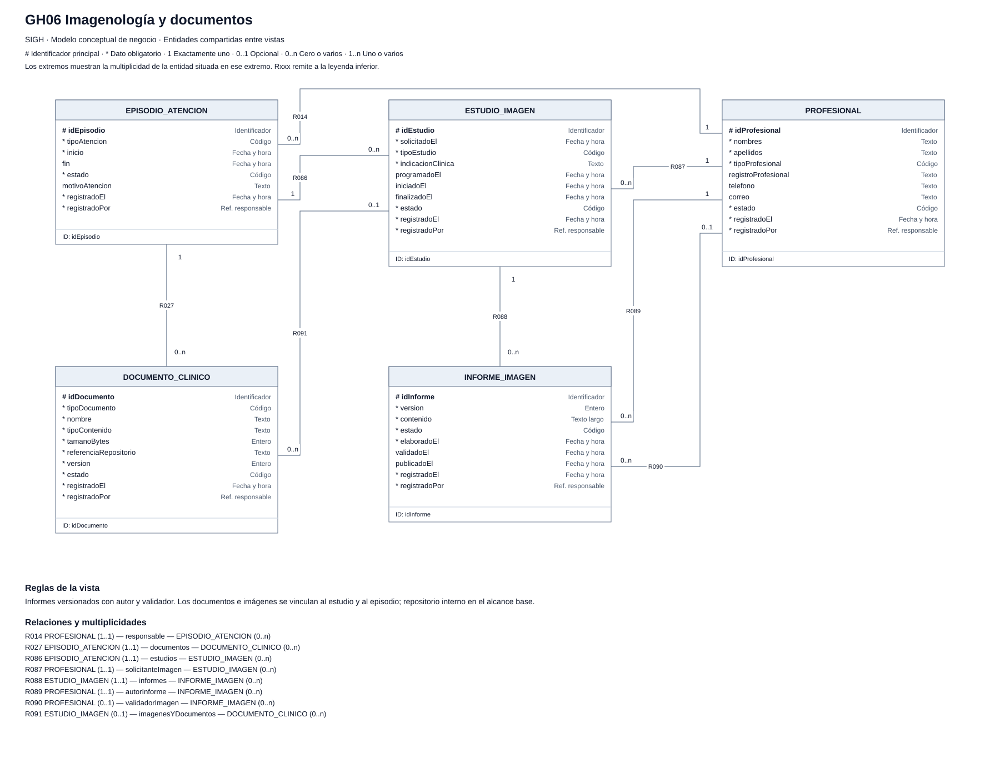
GH07 Prescripción y dispensación
Una receta contiene ítems. La entrega puede ser parcial y detalla cantidades y lote aplicable; cada entrega confirmada produce su salida consistente.
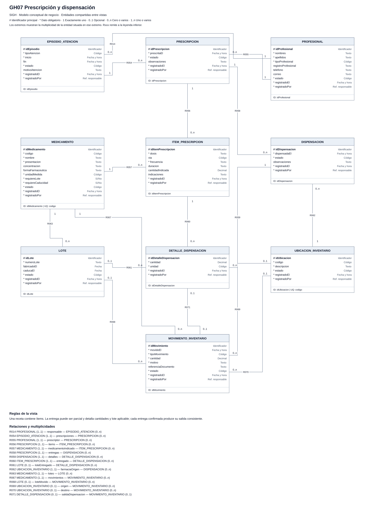
GH08 Inventario por ubicación y lote
Las existencias se distinguen por producto, ubicación y lote. No dispensable, reservado y disponible no son el mismo saldo. Origen y destino dependen del tipo de movimiento.
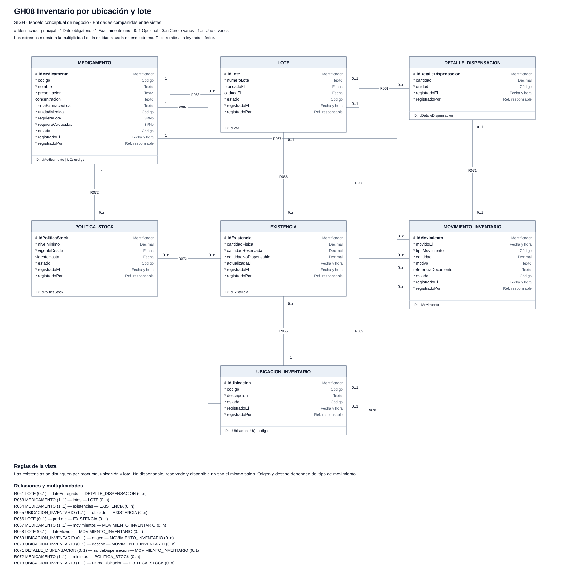
GH09 Hospitalización, camas y egreso
Alta clínica y egreso administrativo son distintos. Asignaciones y estados tienen intervalos; no se omiten limpieza y preparación ni se permiten solapamientos incompatibles.
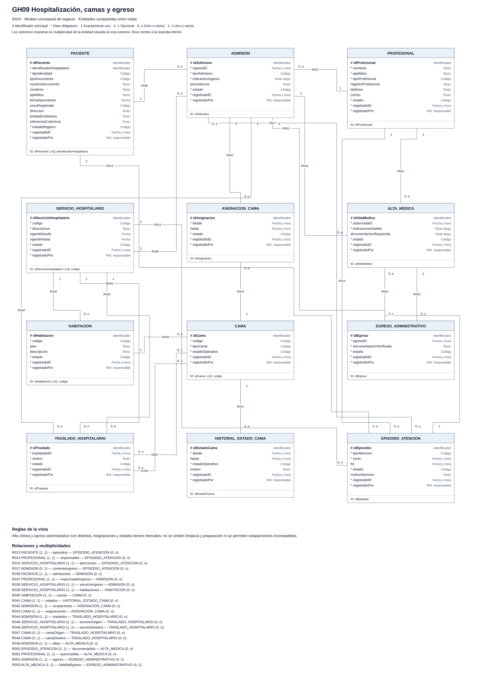
GH10 Cirugía, recursos y recuperación
Disponibilidad temporal de recursos y equipo. Programación, controles, ejecución y recuperación conservan responsables y fechas.
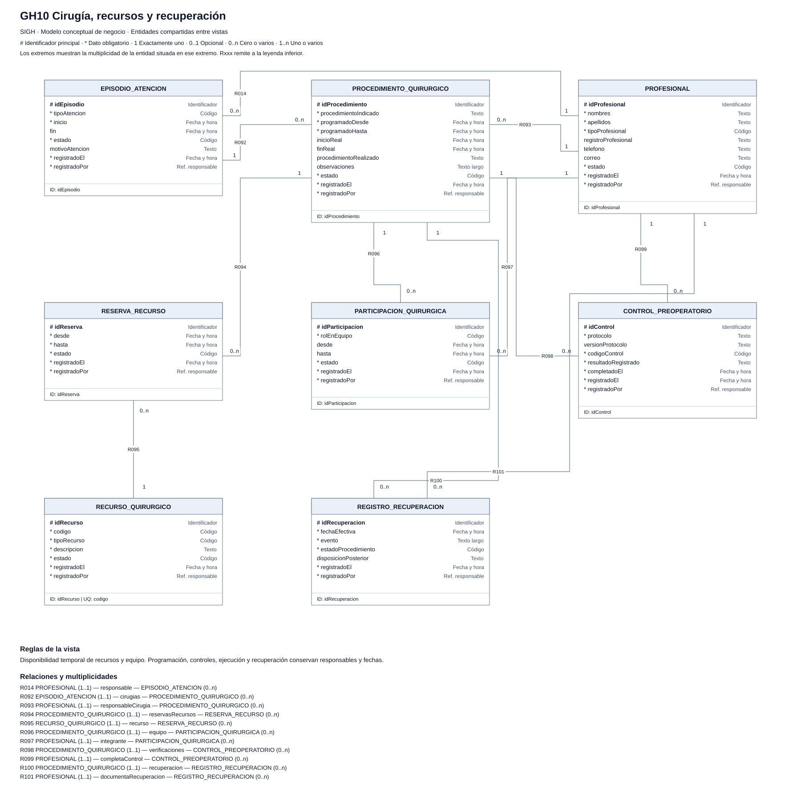
FI01 Finanzas
Cargos antes de facturar, líneas con reglas e importes históricos, pagos parciales y ajustes vinculados al documento original. Sin integración tributaria implícita.
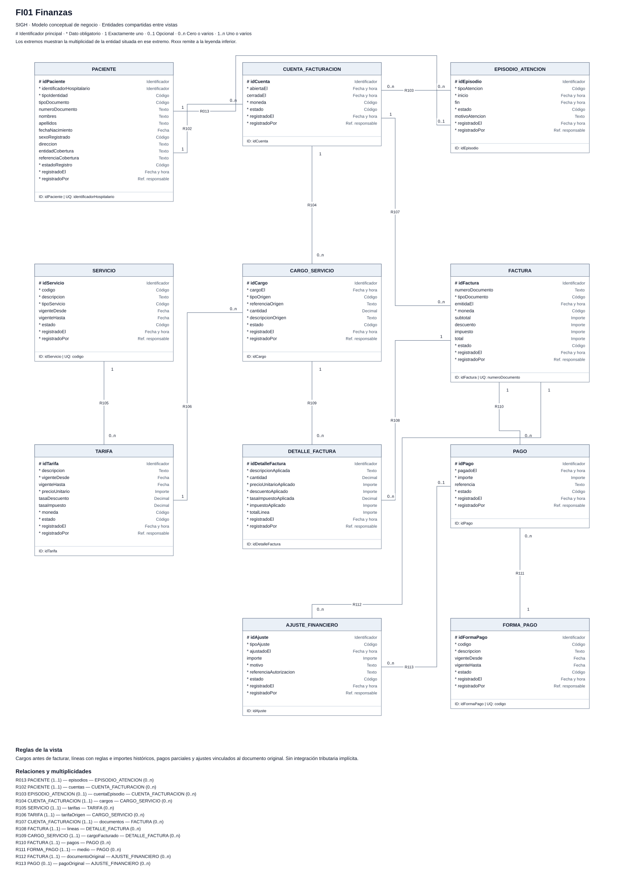
CA01 Catálogos y vigencia
Los catálogos especializados mantienen identidad propia. El catálogo operativo organiza dominios aprobados de estados y motivos, sin reemplazar los datos clínicos por un modelo genérico de atributos.
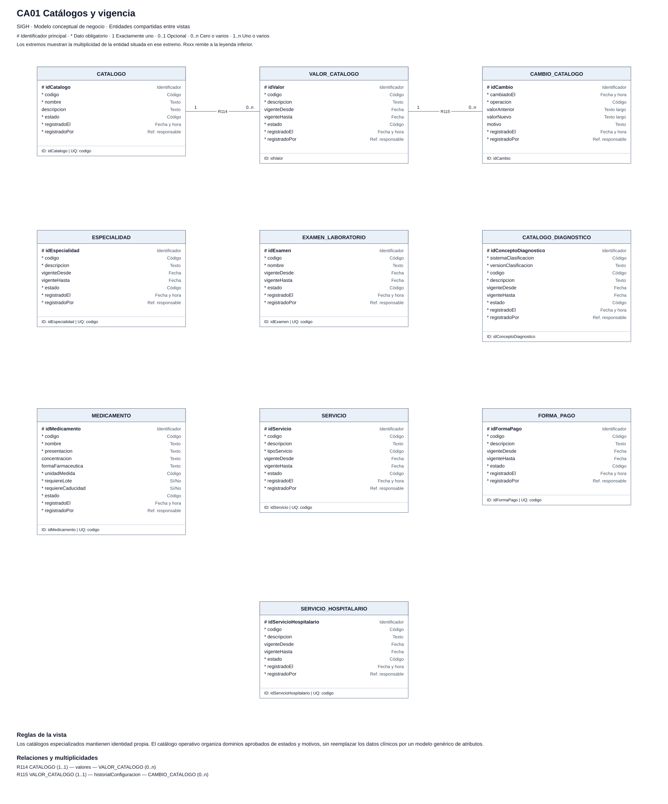